The Fundamental Theorem lets us recognize subcategories and full subcategories among arbitrary functors. We then study full faithfulness under passage to functor categories and in adjunctions, and characterize conservative functors.
6.4.1 Subcategories and full subcategories
Lemma 6.4.1. Let \(X\) and \(Y\) be animae. Then a map \(u\colon X \to Y\) is fully faithful if and only if it is an embedding.
Proof
Consider the following commutative diagram:
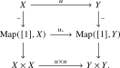
Corollary 6.4.2. A fully faithful functor \(f\colon C\to D\) induces an embedding \(f^{\simeq}\colon C^{\simeq}\to D^{\simeq}\).
Proof
The equivalences \(C(x,y)\simeq D(fx,fy)\) restrict to equivalences between their subanimae of isomorphisms: functors preserve isomorphisms, and \(f\) reflects them by Proposition 6.3.5. By the Rezk axiom these are precisely the animae of identifications \(x=y\) and \(f(x)=f(y)\). Thus \(f^{\simeq}\) is an embedding.
Corollary 6.4.3. Let \(f\colon C \to D\) be a fully faithful functor such that \(f^{\simeq}\colon C^{\simeq} \to D^{\simeq}\) admits a section. Then the functor \(f^{\simeq} \colon C^{\simeq} \to D^{\simeq}\) is an equivalence.
Proof
We have seen in Corollary 6.4.2 that the functor \(f^{\simeq}\) is an embedding. Since it also admits a section, it follows that \(f^{\simeq}\) is an equivalence by Lemma 1.6.24.
Lemma 6.4.4. For a functor \(f\colon C \to D\), the following conditions are equivalent:
(1) The functor \(f\) is fully faithful;
(2) For every object \(x\) in \(C\), the following commutative square is a pullback square:
(3) For every object \(x\) in \(C\), the following commutative square is a pullback square:
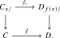
Proof
We will prove the equivalence between (1) and (2); the equivalence between (1) and (3) is dual. The vertical two maps in (2) are both right fibrations by Theorem 4.3.3, hence by Corollary 6.1.13 the square is a pullback square if and only if it induces an equivalence on all fibers. But for an object \(y\) of \(C\), the induced map on fibers is the map \(C(y,x) \to D(f(y),f(x))\), so this condition is satisfied if and only if \(f\) is fully faithful.
Proposition 6.4.5. Consider a functor \(f\colon C \to D\). Then the following conditions are equivalent:
(1) The functor \(f\) is an embedding, in the sense of Definition 1.6.19;
(2) The induced map \(f_*\colon M_C := \Map([1],C) \to \Map([1],D)\) is an embedding and the induced map \(C \to \lra{M_C}_D\) is an equivalence;
(3) The functor \(f\) exhibits \(C\) as a subcategory of \(D\), in the sense of Definition 3.1.2.
Proof
It is clear that (2) implies (3), and we showed in Lemma 3.1.5 that (3) implies (1). To see that (1) implies (2), assume that \(f\) is an embedding. Then also the induced map \(f_*\colon \Map([1],C) \to \Map([1],D)\) is an embedding. To show that the functor \(C \to \lra{M_C}_D\) is an equivalence, it suffices by Corollary 6.3.9 to show that the induced functor \(\Map([1],C) \to \Map([1],\lra{M_C}_D)\) is an equivalence. But this is clear since under the fixed identification \(\Map([1],\lra{M_C}_D) \iso M_C = \Map([1],C)\) this map corresponds to the identity map on \(\Map([1],C)\).
Proposition 6.4.6. Consider a functor \(f\colon C \to D\). Then the following conditions are equivalent:
(1) The functor \(f\) is fully faithful;
(2) The functor \(f^{\simeq}\colon C^{\simeq} \to D^{\simeq}\) is an embedding and the canonical functor \(C \to \lra{C^{\simeq} \subseteq D}\) is an equivalence;
(3) The functor \(f\) exhibits \(C\) as a full subcategory of \(D\), in the sense of Definition 3.2.2.
Proof
First note that in all three cases the induced map \(f^{\simeq}\colon C^{\simeq} \to D^{\simeq}\) is an embedding, where in case (1) we use Corollary 6.4.2.
To prove that (1) implies (2), assume that \(f\) is fully faithful. We already argued that \(f^{\simeq}\colon C^{\simeq} \to D^{\simeq}\) is an embedding. To show that \(C \to \lra{C^{\simeq} \subseteq D}\) is an equivalence, it suffices by Corollary 6.3.9 to show that the induced functor \(\Map([1],C) \to \Map([1],\lra{C^{\simeq} \subseteq D})\) is an equivalence. By Corollary 3.2.8, this is equivalent to the condition that the top square in the following commutative diagram is a pullback square:
 Since the bottom two vertical maps are equivalences by Axiom C.1, the bottom square is always a pullback square, hence by the pasting law for pullback squares it will suffice to show that the outer square is a pullback square. But this is precisely the full faithfulness of \(f\).
Since the bottom two vertical maps are equivalences by Axiom C.1, the bottom square is always a pullback square, hence by the pasting law for pullback squares it will suffice to show that the outer square is a pullback square. But this is precisely the full faithfulness of \(f\).
The fact that (2) implies (3) follows from Proposition 3.2.7, which shows that the functor \(\lra{C^{\simeq} \subseteq D} \to D\) is a full subcategory, together with the equivalence \(C \iso \lra{C^{\simeq} \subseteq D}\) from (2).
Finally, condition (3) demands that for every category \(B\) the commutative square
 is a pullback square, and as explained above this square for \(B = [1]\) precisely says that \(f\) is fully faithful, giving (1).
is a pullback square, and as explained above this square for \(B = [1]\) precisely says that \(f\) is fully faithful, giving (1).
6.4.2 Full faithfulness and functor categories
Theorem 6.4.7. Let \(f\colon C \to D\) be any functor. Then the following conditions are equivalent:
(1) The functor \(f\) is fully faithful;
(2) The functor \(f\) induces a pullback square
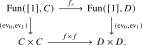
(3) For every category \(E\), the induced functor \(f_*\colon \Fun(E,C) \to \Fun(E,D)\) is fully faithful.
Proof
We first show that (2) and (3) are equivalent. By Proposition 1.6.3, we see that condition (2) is equivalent to the condition that for every category \(E\) the commutative square
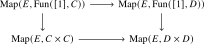 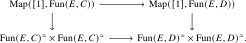
Condition (2) implies (1) by taking groupoid cores. Conversely, assume (1). By Proposition 6.4.6, \(f\) exhibits \(C\) as a full subcategory of \(D\).
Let \(J=[1]\sqcup[1]\) be the two edges \(\{0,1\}\times[1]\) of \([1]\times[1]\). The inclusion \(J\to[1]\times[1]\) is an equivalence on groupoid cores. Apply the defining mapping-anima pullback property of a full subcategory to \(J\) and \([1]\times[1]\). Pasting these pullbacks gives
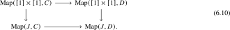
By currying and preservation of pullbacks by mapping animae, this says that applying \(\Map([1],-)\) to the comparison functor \[ \Fun([1],C)\longrightarrow (C\times C)\times_{D\times D}\Fun([1],D) \] gives an equivalence. Detection by \(\Map([1],-)\) makes the comparison an equivalence, proving (2).
Corollary 6.4.8. Let \(u\colon A \hookrightarrow C\) be a full subcategory, in the sense of Definition 3.2.2. Then for every category \(E\), the induced functor \(\Fun(E,u)\colon \Fun(E,A) \hookrightarrow \Fun(E,C)\) is again a full subcategory, with essential image those functors \(F\colon E \to C\) satisfying the property that, for any object \(x\) of \(E\), the object \(F(x)\) of \(C\) is contained in \(A\).
Proof
The functor \(u\) is fully faithful by Proposition 6.4.6, hence so is \(\Fun(E,u)\) by Theorem 6.4.7. Another application of Proposition 6.4.6 thus shows that \(\Fun(E,A)\) is a full subcategory of \(\Fun(E,C)\). The characterization of its essential image in \(\Fun(E,C)\) is then a consequence of the following pullback square from Corollary 3.2.8:
Remark 6.4.9. For every category \(E\), we have a pullback square Indeed, consider the comparison map from the upper-left corner to the pullback. The defining pullback square for the full subcategory \(\lra{\Gamma \subseteq C}\) shows that this comparison induces an equivalence on groupoid cores, and hence it is strongly surjective. Both horizontal functors in the displayed square are fully faithful by Theorem 6.4.7. The cancellation property of fully faithful functors from Corollary 6.3.3 therefore shows that the comparison map is fully faithful. The fundamental theorem of category theory, Theorem 6.3.8, now implies that it is an equivalence.
6.4.3 Fully faithful adjoints
Proposition 6.4.10. Let \(f\colon C\to D\) be a functor and let \(s\colon D\to C\) be a left (resp. right) adjoint of \(f\). The following conditions are equivalent:
(i) The functor \(s\) is a left (resp. right) adjoint section of \(f\).
(ii) The functor \(s\) is fully faithful.
(iii) For every object \(y\) of \(D\), the unit map \(y \to f(s(y))\) (resp. the counit map \(f(s(y)) \to y\)) is an isomorphism.
Proof
We prove the case in which \(s\) is right adjoint to \(f\); the other case is dual. Let \(\eta\colon \id_C \to sf\) and \(\epsilon\colon fs \to \id_D\) denote the unit and counit. Conditions (i) and (iii) are equivalent by the objectwise criterion for natural isomorphisms, Proposition 3.4.6.
Given objects \(x\) and \(y\) of \(D\), consider the
counit map \(\epsilon_x\colon fsx \to x\). By the triangle identity, the composite
\[
sx \xrightarrow{\eta_{sx}} sfsx \xrightarrow{s\epsilon_x} sx
\]
is the identity and we may now consider the following commutative diagram:
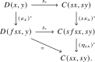
By virtue of Lemma 4.4.11, Proposition 6.4.10 immediately implies:
Corollary 6.4.11. The functor \(p_{[1]}^*\colon C \to \Fun([1],C)\) is fully faithful.
Corollary 6.4.12. The inclusion functor \(\pi_{\Iso}\colon \Iso(C) \to \Fun([1],C)\) is fully faithful.
Proof
Let \(i\colon C \to \Iso(C)\) be the equivalence from the Rezk axiom. The composite \(\pi_{\Iso}i\) is the constant-diagram functor \(p_{[1]}^*\), which is fully faithful by the previous corollary. Given objects \(a\) and \(b\) of \(\Iso(C)\), choose objects \(x\) and \(y\) of \(C\) and isomorphisms \(i(x)\iso a\) and \(i(y)\iso b\). Conjugation by these isomorphisms identifies the map \[ \Iso(C)(a,b) \longrightarrow \Fun([1],C)(\pi_{\Iso}(a),\pi_{\Iso}(b)) \] with the map on hom animae induced by \(p_{[1]}^*\) from \(x\) to \(y\), and the latter is an equivalence. Thus \(\pi_{\Iso}\) is fully faithful.
6.4.4 Conservative functors
We introduce the notion of a conservative functor and prove some basic properties about them.
Definition 6.4.13 (Conservative functor). A functor \(f\colon C \to D\) is said to be conservative if the following condition is satisfied: for every pair of objects \(x\) and \(y\) of \(C\) and every morphism \(u\colon x \to y\) in \(C\), if the image \(f(u)\colon f(x) \to f(y)\) is invertible in \(D\), then \(u\) is already invertible in \(C\).
Conservative functors may be characterized in a variety of different ways:
Proposition 6.4.14. Let \(f\colon C \to D\) be any functor. The following conditions are equivalent:
(i) The functor \(f\) is conservative.
(ii) The commutative square
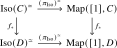
is a pullback square.(iii) The commutative square
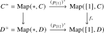
is a pullback square.(iv) For any functor \(A\to D\) with \(A\) an anima, the pullback \(A\times_D C\) is an anima;
(v) The pullback \(D^{\simeq}\times_D C\) is an anima;
(vi) A given commutative square with \(X\) and \(Y\) animae is a pullback square whenever the associated square
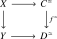
is a pullback square.(vii) The square
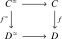
is a pullback square.
Proof
We first show the equivalence between (i) and (ii). Recall from Lemma 2.3.3 that the map \[ (\pi_{\Iso})^{\simeq}\colon \Iso(C)^{\simeq} \to \Map([1],C) \] is an embedding for every category \(C\). It thus follows from Lemma 1.6.26 that also the comparison map \[ \Iso(C)^{\simeq} \to \Iso(D)^{\simeq} \times_{\Map([1],D)} \Map([1],C) \] is an embedding. It thus follows from Lemma 1.6.24 that it is an equivalence if and only if it admits a section. Since this is a map of animae with proposition-valued fibers, the latter is equivalent to the existence of a lift for every object of the target, by applying this condition to the generic object in the context of that target anima. But since the objects in the target of this map are precisely those morphisms \(u\colon x \to y\) in \(C\) whose image in \(D\) is invertible, this lifting condition is precisely the condition on \(f\) that every such morphism \(u\) in fact comes from an isomorphism in \(C\), which is the definition of conservativity.
The equivalence between (ii) and (iii) is immediate from the equivalence \(C^{\simeq} \iso \Iso(C)^{\simeq}\) from the Rezk axiom, Axiom F. Conditions (iv) and (v) are equivalent: every map from an anima to \(D\) factors through \(D^{\simeq}\), and animae are closed under pullbacks. Under these conditions, \(Y\times_D C\) is an anima whenever \(Y\) is an anima. Since groupoid cores preserve pullbacks, there are equivalences \[ Y\times_D C\simeq (Y\times_D C)^{\simeq}\simeq Y\times_{D^{\simeq}}C^{\simeq}. \] This proves (vi). The implication (vi) \(\implies\) (vii) is clear. To see that (vii) implies (iii), we use that the functor \(\Map([1],-)\) preserves pullback squares, and apply the equivalence \(C^{\simeq} \iso \Map([1],C^{\simeq})\) coming from the fact that \(C^{\simeq}\) is an anima.
It thus remains to show that (iii) implies (v). Consider a pullback square
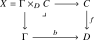 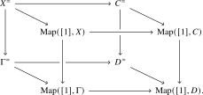 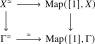
Lemma 6.4.15. Compositions of conservative functors are conservative.
Proof
This is clear from the definition.
Lemma 6.4.16. Let \(f\colon C \to D\) be a functor admitting a retraction \(r\colon D \to C\), i.e. we have \(rf = \id_C\). Then \(f\) is conservative.
Proof
Consider the following commutative diagram:
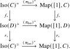
Corollary 6.4.17. For every category \(C\), the functor \((\ev_0,\ev_1)\colon \Fun([1],C) \to C \times C\) is conservative.
Proof
We will check condition (iii) from Proposition 6.4.14. Under the currying-uncurrying equivalence from Lemma 1.7.12, this translates to showing that the square
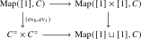 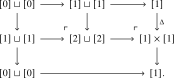
Lemma 6.4.18. Every left (resp. right) fibration is conservative.
Proof
In light of Corollary 4.2.3, this follows immediately from characterization (iii) in Proposition 6.4.14.
Lemma 6.4.19. Let \(f\colon C \to S\) and \(g\colon D \to S\) be functors and assume that \(g\) is conservative. Then the canonical inclusion map \[ \Map_S(C,D) \to \Fun_S(C,D) \] from Definition 1.9.2 is an equivalence.
Proof
The induced functor \(g_*\colon \Fun(C,D) \to \Fun(C,S)\) is conservative. Indeed, if \(g_*\alpha\) is a natural isomorphism, then conservativity of \(g\) implies that every component of \(\alpha\) is invertible. By Proposition 3.4.6, \(\alpha\) is a natural isomorphism. It thus follows from Proposition 6.4.14 that we have a pullback square of the form
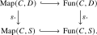
Corollary 6.4.20. For categories \(C\) and \(D\), the canonical embedding \(\imath_C\colon C^{\simeq} \to C\) induces a conservative functor \(\imath_C^*\colon \Fun(C,D) \to \Fun(C^{\simeq}, D)\).
Proof
If a natural transformation becomes invertible after restriction to \(C^{\simeq}\), each of its components is invertible. It is therefore invertible by Proposition 3.4.6.